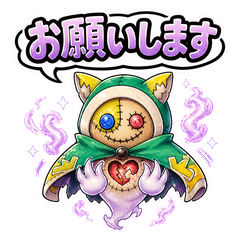
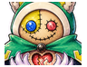
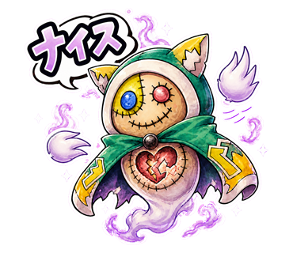
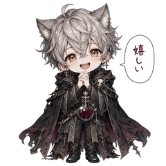

こわれた心を、
そっと縫いあわせる。
捨てられたぬいぐるみが、悲しみと想いで幽霊になった姿「ツギハギゴースト」。
誰かのやさしい気持ちに触れることで、少しずつ元の姿に戻れると信じています。
そんな不器用でやさしい幽霊の、まいにち使えるLINEスタンプ全40種です。

ツギハギゴーストって、どんな子？
かつて大切にされていたぬいぐるみが、壊れて捨てられてしまった。
その悲しみと想いが幽霊となり、ツギハギの姿でさまよっている。
壊れた心を直すために、「誰かの優しい気持ち」を探し続けている──。
心を見つけるたびに、体の縫い目が少しずつ元に戻っていくらしい。
（ぬいぐるみの魂）
優しい・純粋
ぬいぐるみ・星
孤独・冷たい場所
浮遊・すり抜け
全40種の豊富な表情
挨拶から日常の相槌、感情表現までこれ一つでカバー。
ちょっと不器用で愛おしい
ツギハギだらけの、でも一生懸命なやさしい表情。
手描き風の温かいタッチ
絵本のような色鉛筆タッチで、トーク画面をやさしく彩る。
まいにちのトークに、ゴーストの気持ちを。
タップすると、下のトーク画面に届きます。
トークで使うと、こんな感じ。


一度購入すれば、全40種類が使い放題。
送るたびに、ツギハギゴーストの気持ちが少しずつ元に戻っていきます。
※LINE Creators Marketにて審査申請中です。承認され次第、このページからLINE STOREへご案内します。
他にも、LINEスタンプを作っています。
よろしければ、こちらも覗いてみてください。

スプレーアート -全て"イイね"という意味のスタンプ集-
ストリートアート風の、直感的な肯定・共感を伝えるスタンプ。

ゴシックファンタジーの黒猫耳魔法使い -夜長に寄り添うスタンプ-
銀髪×猫耳の小さな魔法使い「ノクト」の、耽美で表情豊かな日常スタンプ。